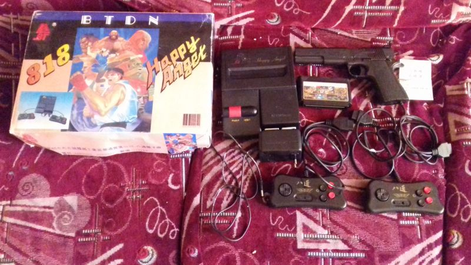

| Произведён | Скорее всего 1992 год |
| Процессор | ??? - упрощенный аналог MOS-6502 бескорпусный |
| Зеленит | Да |
| Встроенные игры | Нет |
| Количество слотов для картриджей | 1 |
| Стандарт картриджа | Японский Famicom 60 пинов |
| Звуковой процессор | Нормальный |
| Количество пинов геймпадов | 9 |
| АВ-выход | Не работает |
| Антенный выход | Работает |
BT BTDN 818 Happy Angel
BT BTDN 818 Happy Angel - клон Nintendo Famicom, созданный компанией BaTong(BT) на Шеньчженском Заводе Электроники ( провинция Гуандун, юг Китайской Народной Республики ). Годы изготовления и тираж неизвестны, однако экземпляр имеющийся в распоряжении нашего музея имеет номер 440321L и выпущен в 1992 году. Неизвестно также где подобные приставки имели распространение, однако вполне возможно что продавались на територии Росиии, учитывая что другие клоны этой же компании BT имели хождение.
Клон был куплен в 2013 году у пользователя с ником EvgenP06 = Евгений Прядко за почти 2 тысячи рублей. Куплен был в полном комплекте и в довольно хорошем состоянии.
Комплектация была полная:
Консоль
Небольшой листок-паспорт
Комплектующий картридж
Два геймпада
Световой пистолет
Блок питания
Кабель для подключения по антенне
Коробка имеет множество рисунков игры Street Fighter 2, а также двух скриншотов версии для Super Nintendo. Также имеет надписи на китайском языке
深圳市布吉镇羅崗工業區華通實業公司、八通電子廠 - что переводится как Промышленная компания Хуатонг, завод электроники Батонг, промышленная зона Луоганг, город Буджи, Шэньчжэнь - стало быть адрес завода-изготовителя.
Также имелся телефон и почтовый индекс:
电话(телефон): 8882039 8882037
郵紙(почтовый индекс): 518112
Сама приставка внешний вид позаимствовала с Nintendo AV Famicom или NES Top Loader, при этом имеет несколько отличий - и самое главное состоит в том, что приставка использует два слота 15 штырьков под геймпады, заместо оригинальных NES-слотов, и также сбоку убран слот для переферии
Цвета изменены - с белого и красного на черный и красный, довольно таки красиво. Имеется логтип фирмы БТ, он немного потертый.
В консоли используется не полноценная плата, а разбитая на три отдельных части. Как это часто бывало - плата видеовыхода и питания, плата со слотами для геймпадов и основная плата.
Поскольку консоль использует вместо мелкой логики удешевленный вариант в виде бескорпусного кристалла, определить на данный момент его название не представляется возможным.
Консоль использует исключительно один бескорпусный кристалл, на котором вероятно собрана вся логика.
Удивительным является тот факт, что на консоли не работет AV-выход, хотя он и присутствует на задней панели. Я слышал, что на деле он работает, просто даёт крайне слабый сигнал, и его получить на экране не получается, но я могу ошибаться в данном случае.
Приставка использует довольно неплохого качества пластик
С консолью также остался своего рода талон на продажу, на котором также имелось немного информации, на нём было написано следующее:
深圳市八通電子廠 - Шенчжень Батонг Завод Электроники
游戲機 - Игровая приставка
合格證 - Сертификат
檢驗員 - проверена( здесь по идее должна была стоять подпись, но её там не было )
型號 - модель: BT
由深圳市技術愆督局頒發代號編號 - серийный номер выданный Шэньчженьским бюро технадзора
Далее после последней строчки была надпись: Q/BT002-92
QB/440321L
Комплектующий картридж к данной приставке имелся - это классический картридж 9999в1. Он присутствует в нашем музее в нескольких экземплярах. В данном случае полностью аналогичен вот этому( нажми на текст чтобы посмотреть ).
К приставке также имелись два геймпада, которые по форме схожи с геймпадами от приставки Dendy Classic - с круглой крестовиной, и нетипичной, непрямоугольной формы. Они сделаны достаточно неплохо, резинки на кнопках хорошие, нажимаются приятно. На таких геймпадах играть одно удовольствие. Аналогично приставке - черного и красного цвета и имеют надписи 八通 - обозначающие компанию производителя BaTong.
В наличии также был световой пистолет - который по форме копировал собой реальный пистолет Colt 1911. На удивление сделан довольно неплохо и весьма реалистично, это вам не игрушечный Zapper.
Блок Питания стандартный на 9 вольт 850 мА с классической распайкой - плюс снаружи, минус внутри
И также имелся кабель для подключения по антенне, правда на сей раз не было антенного переключателя. Скорее всего его и не было в комплекте.
Приставка как уже было сказано не работает по AV, но по антенне работает отлично, звук на приставке оказался удешевленный.
Сама приставка была рассмотрена ещё в далеком 2013 году и была одним из первых обзоров, что я вообще написал, скорее всего я сделаю новую версию оного, потому как тот обзор был всё еще достаточно плох( отсутствие опыта и прочее ):
http://superbrain1997.blogspot.com/2013/09/btdn-818-happy-angel.html
А видеоверсии данного обзора пока еще нет, но будет в будущем.